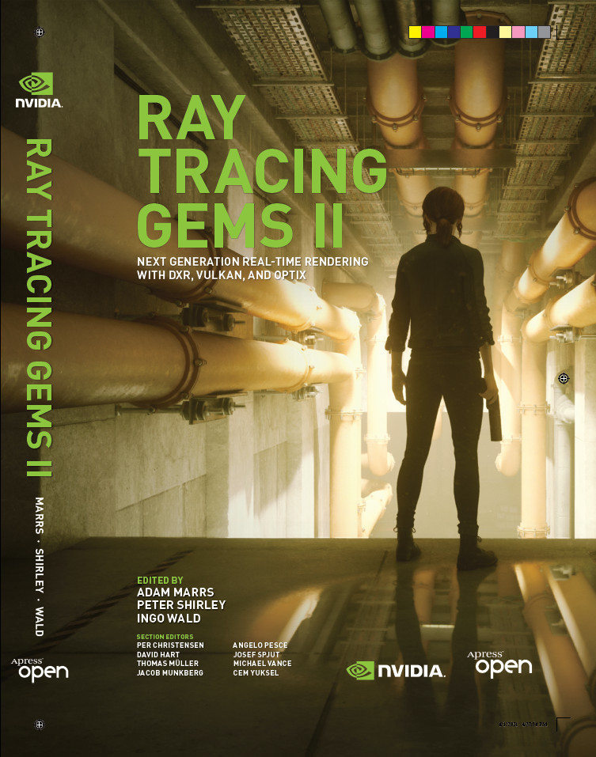
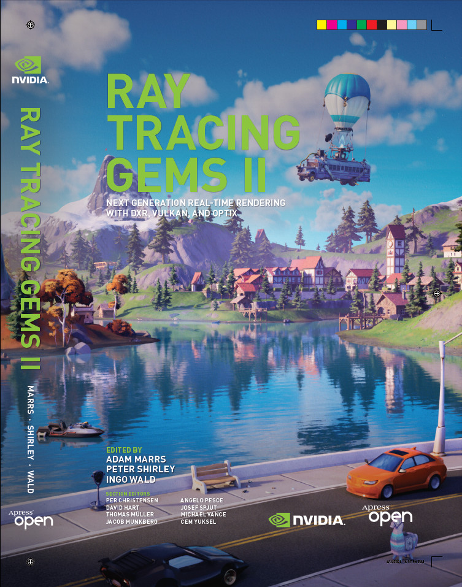
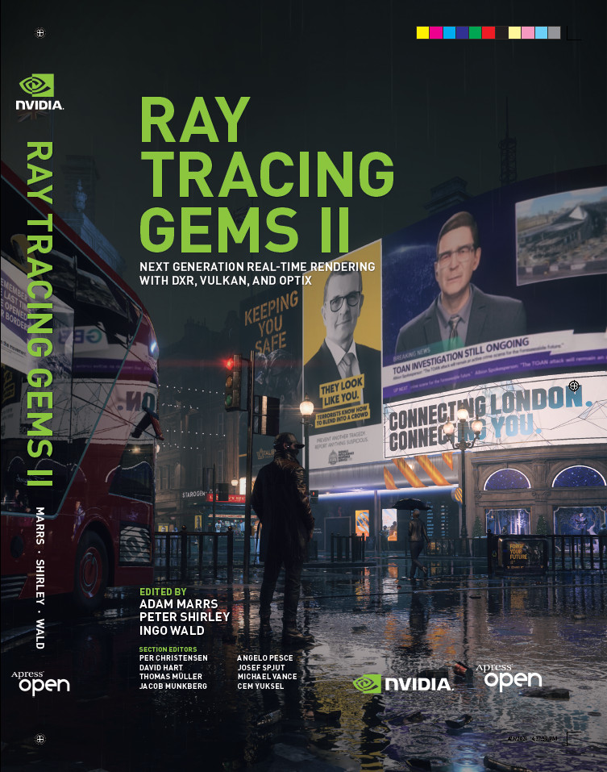
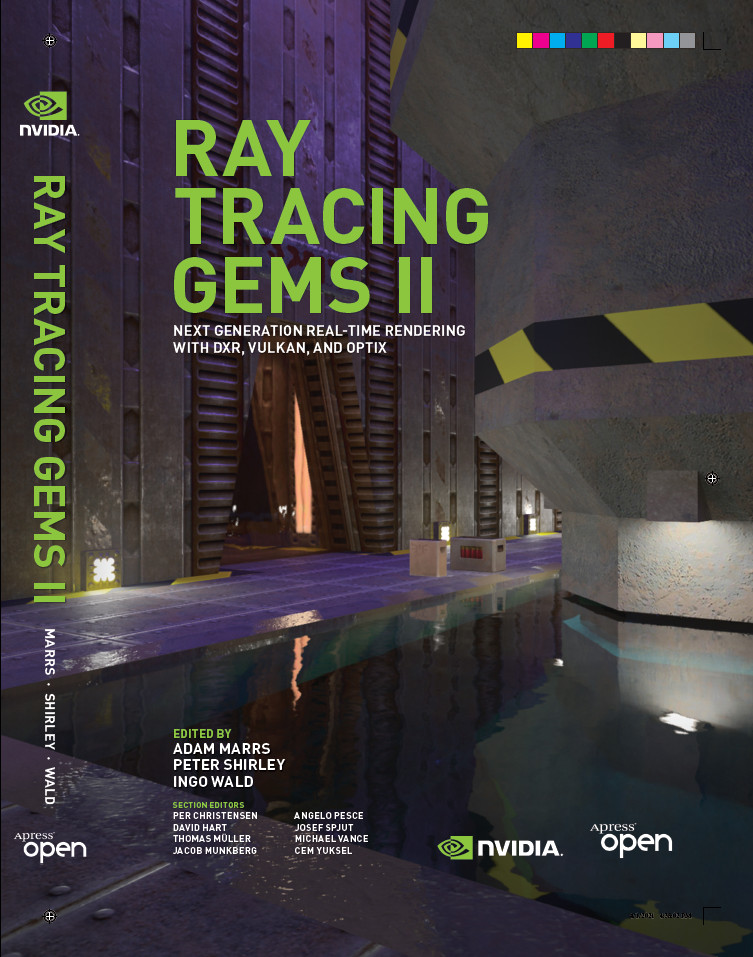

Series
Visit
this page for all books in the
Ray Tracing Gems series.
About
Ray Tracing Gems II book is a collection of articles focused on ray tracing techniques for serious practitioners. Written by industry experts with a particular focus on ray tracing, it offers a practical means to master the new capabilities of current and future GPUs with the latest graphics APIs.
What You'll Learn:
- The latest ray tracing techniques for developing real-time applications in multiple domains
- Case studies from developers and studios who have shipped products that use real-time ray tracing.
- Guidance, advice and best practices for rendering applications with various GPU-based ray tracing APIs (DirectX Raytracing, Vulkan Ray Tracing, OptiX)
- High performance graphics for 3D graphics, virtual reality, animation, and more
Downloads and Print Copies
The electronic version of this books is free to download, and can be shared under the terms of the Creative Commons Attribution-NonCommercial-NoDerivatives 4.0 International License.
To order the hardcover or softcover print edition, visit Amazon (paid link) or Apress.
Ray Tracing Gems II first run was printed in five covers, four custom to the first run. Beside NVIDIA's "Marbles at Night" cover to the left, there was a cover for Remedy Entertainment's game Control, a cover for Epic Games's Fortnite, a cover for Ubisoft's Watch Dogs: Legion, and a cover for ID Software and NVIDIA's Quake II RTX. Newer prints are just the Marbles cover.




Source Code
The book has a source code repository on GitHub.
Table of Contents
- Preface
- Foreword by Andrew Glassner and Ignacio Llamas
- Contributors
- Notation
- PART I: Ray Tracing Foundations, editor: Per Christensen
- 1. A Breakneck Summary of Photographic Terms (and Their Utility to Ray Tracing), by Trevor David Black
- 2. Ray Axis-Aligned Bounding Box Intersection, by Peter Shirley, Ingo Wald, and Adam Marrs
- 3. Essential Ray Generation Shaders, by Morgan McGuire and Zander Majercik
- 4. Hacking the Shadow Terminator, by Johannes Hanika
- 5. Sampling Textures with Missing Derivatives, by Maksim Aizenshtein and Matt Pharr
- 6. Differential Barycentric Coordinates, by Tomas Akenine-Möller
- 7. Texture Coordinate Gradients Estimation for Ray Cones, by Wessam Bahnassi
- 8. Reflection and Refraction Formulas, by Eric Haines
- 9. The Schlick Fresnel Approximation, by Zander Majercik
- 10. Refraction Ray Cones for Texture Level of Detail, by Jakub Boksansky, Cyril Crassin, and Tomas Akenine-Möller
- 11. Handling Translucency with Real-Time Ray Tracing, by Tianyi "Tanki" Zhang
- 12. Motion Blur Corner Cases, by Christopher Kulla and Thiago Ize
- 13. Fast Spectral Upsampling of Volume Attenuation, by Johannes Jendersie
- 14. The Reference Path Tracer, by Jakub Boksansky and Adam Marrs
- PART II: APIs and Tools, editor: David Hart
- 15. The Shader Binding Table Demystified, by Will Usher
- 16. Introduction to Vulkan Ray Tracing, by Matthew Rusch, Neil Bickford, and Nuno Subtil
- 17. Using Bindless Resources with DirectX Raytracing, by Matt Pettineo
- 18. WebRays: Ray Tracing on the Web, by Nick Vitsas, Anastasios Gkaravelis, Andreas A. Vasilakis, and Georgios Papaioannou
- 19. Visualizing and Communicating Errors in Rendered Images, by Pontus Andersson, Jim Nilsson, and Tomas Akenine-Möller
- PART III: Sampling, editor: Thomas Müller
- 20. Multiple Importance Sampling 101, by Anders Lindqvist
- 21. The Alias Method for Sampling Discrete Distributions, by Chris Wyman
- 22. Weighted Reservoir Sampling: Randomly Sampling Streams, by Chris Wyman
- 23. Rendering Many Lights with Grid-Based Reservoirs, by Jakub Boksansky, Paula Jukarainen, and Chris Wyman
- 24. Using Blue Noise for Ray Traced Soft Shadows, by Alan Wolfe
- PART IV: Shading and Effects, editor: Cem Yuksel
- 25. Temporally Reliable Motion Vectors for Better Use of Temporal Information, by Zheng Zeng, Shiqiu Liu, Jinglei Yang, Lu Wang, and Ling-Qi Yan
- 26. Ray Traced Level of Detail Cross-Fades Made Easy, by Holger Gruen
- 27. Ray Tracing Decals, by Wessam Bahnassi
- 28. Billboard Ray Tracing for Impostors and Volumetric Effects, by Felix Brüll, Robin Fynn Diedrichs, and Thorsten Grosch
- 29. Hybrid Ray Traced and Image-Space Refractions, by Daniel Parhizgar and Marcus Svensson
- 30. Real-Time Ray Traced Caustics, by Xueqing Yang and Yaobin Ouyang
- 31. Tilt-Shift Rendering Using a Thin Lens Model, by Andrew Kensler
- PART V: Intersection, editor: Angelo Pesce
- 32. Fast and Robust Ray/OBB Intersection Using the Lorentz Transformation, by Rodolfo Sabino, Creto Augusto Vidal, Joaquim Bento Cavalcante-Neto, and José Gilvan Rodrigues Maia
- 33. Real-Time Rendering of Complex Fractals, by Vinícius da Silva, Tiago Novello, Hélio Lopes, and Luiz Velho
- 34. Improving Numerical Precision in Intersection Programs, by Ingo Wald
- 35. Ray Tracing of Blobbies, by Manuele Sabbadin and Marc Droske
- 36. Curved Ray Traversal, by Christiaan Gribble
- 37. Ray-Tracing Small Voxel Scenes, by Dylan Lacewell
- PART VI: Performance, editors: Josef Spjut and Michael Vance
- 38. CPU Performance in DXR, by Peter Morley
- 39. Inverse Transform Sampling Using Ray Tracing Hardware, by Nate Morrical and Stefan Zellmann
- 40. Accelerating Boolean Visibility Operations Using RTX Visibility Masks, by Dirk Gerrit van Antwerpen and Oliver Klehm
- 41. Practical Spatial Hash Map Updates, by Pascal Gautron
- 42. Efficient Spectral Rendering on the GPU for Predictive Rendering, by David Murray, Alban Fichet, and Romain Pacanowski
- 43. Efficient Unbiased Volume Path Tracing on the GPU, by Nikolai Hofmann and Alex Evans
- 44. Path Tracing RBF Particle Volumes, by Aaron Knoll, Gregory P. Johnson, and Johannes Meng
- 45. Fast Volumetric Gradient Shading Approximations for Scientific Ray Tracing, by Carson Brownlee and David DeMarle
- PART VII: Ray Tracing in the Wild, editor: Jacob Munkberg
- 46. Ray Tracing in Control, by Juha Sjöholm, Paula Jukarainen, and Tatu Aalto
- 47. Light Sampling in Quake 2 Using Subset Importance Sampling, by Tobias Zirr
- 48. Ray Tracing in Fortnite, by Patrick Kelly, Yuriy O'Donnell, Kenzo ter Elst, Juan Cañada, and Evan Hart
- 49. ReBLUR: A Hierarchical Recurrent Denoiser, by Dmitry Zhdan
- 50. Practical Solutions for Ray Tracing Content Compatibility in Unreal Engine 4, by Evan Hart
Bibtex entry:
@book{Marrs2021,
title = {Ray Tracing Gems II},
editor = {Adam Marrs, Peter Shirley, and Ingo Wald},
publisher = {Apress},
year = {2021},
note ={\url{http://raytracinggems.com/rtg2}},
}
Cover image by the NVIDIA Creative team, which includes Gavriil Klimov (Creative Director), Jacob Norris (Lead Environment Artist), Andrej Stefancik (Senior 3D Artist), Gregor Kopka (Lead 3D Artist), Artur Szymczak (Senior Lighting Artist), Chase Telegin (Technical Artist), Alessandro Baldasseroni (Lead 3D Artist), Fred Hooper (Lead VFX Artist), and Ilya Shelementsev (Senior 3D Artist).
Webmaster: Eric Haines
Page last updated August 16, 2024
{kind=link}
{kind=link}
{kind=link}
{kind=link}